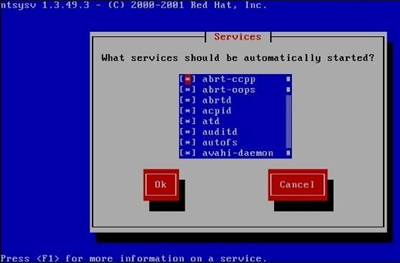

Linux独立服务管理（RPM包的启动与自启动）
独立服务的启动管理
独立的服务要想启动，主要有两种方法。1) 使用/etc/init.d/目录中的启动脚本来启动独立的服务
既然所有独立服务的启动脚本都存放在 /etc/init.d/ 目录中，那么，调用这些脚本就可以启动独立的服务了。这种启动方式是推荐启动方式，命令格式如下：[root@localhost ~]#/etc/init.d独立服务名 start| stop|status|restart|...
参数：- start：启动服务；
- stop：停止服务；
- status：查看服务状态；
- restart：重启动服务；
我们以启动 RPM 包默认安装的 httpd 服务为例，命令如下：
[root@localhost ~]# /etc/init.d/httpd start
正在启动httpd:
[确定]
#启动httpd服务
[root@localhost ~]# /etc/init.d/httpd status
httpd (pid 13313)正在运行…
#查询httpd服务状态，并能够看到httpd服务的PID
[root@localhost ~]#/etc/init.d/httpd stop
停止 httpd:
[确定]
#停止httpd服务
[root@localhost ~]#/etc/init.d/httpd restart
停止httpd:
[失败]
正在启动httpd:
[确定]
重启动httpd服务
2) 使用service命令来启动独立的服务
在 CentOS 系统中，我们还可以依赖 service 命令来启动独立的服务。service 命令实际上只是一个脚本，这个脚本仍然需要调用 /etc/init.d/ 中的启动脚本来启动独立的服务。而且 service 命令是红帽系列 Linux 的专有命令，其他的 Linux 发行版本不一定拥有这条命令，所以我们并不推荐使用 service 命令来启动独立的服务。service 命令格式如下：
[root@localhost ~]# service 独立服务名 start|stop|restart|...
例如：
[root@localhost ~]# service httpd restart
停止httpd:
[确定]
正在启动httpd:
[确定]
[root@localhost ~]# service --status -all
选项：- --status -all：列出所有独立服务的启动状态;
例如：
abrtd(pid 1505)正在运行…
abrt-dumpoops(pid 1513)正在运行…
acpid(pid 1312)正在运行...
…省略部分输出…
独立服务的自启动管理
自启动指的是在系统之后，服务是否随着系统的启动而自动启动。如果启动了某个服务，那么这个服务会在系统重启之后启动吗？答案是不知道，因为启动命令只负责启动服务，而和服务的自启动完全没有关系。同样地，自启动命令只管服务是否会在系统重启之后启动，而和当前系统中的服务是否启动没有关系。
独立服务的自启动方法有三种，我们分别来学习。
1) 使用 chkconfig 服务自启动管理命令
第一种方法是利用 chkconfig 服务自启动管理命令来管理独立服务的自启动，这条命令的用法如下：[root@localhost ~]# chkconfig --list
使用 chkconfig 命令除了可以查看所有 RPM 包默认安装服务的自启动状态，也可以修改和设置 RPM 包默认安装服务的自启动状态，只是独立的服务和基于 xinetd 的服务的设定方法稍有不同。我们先来看看独立的服务如何设置。命令格式如下：[root@localhost ~]# chkconfig [--level 运行级别][独立服务名][on|off]
#选项：- --level: 设定在哪个运行级别中开机自启动（on），或者关闭自启动（off）；
例如：
[root@localhost ~]# chkconfig --list | grep httpd
httpd 0:关闭 1:关闭 2:关闭 3:关闭 4:关闭 5:关闭 6:关闭
#查询httpd的自启动状态。所有的级别都是不自启动的
[root@localhost ~]# chkconfig --level 2345 httpd on
#设置apache服务在进入2、3、4、5级别时自启动
[root@localhost ~]# chkconfig --list | grep httpd
httpd 0:关闭 1:关闭 2:启用 3:启用 4:启用 5:启用 6:关闭
#查询apache服务的自启动状态。发现在2、3、4、5这4个运行级别中变为了"启用"
服务的自启动方法和服务的启动方法是不通用的，我们做一个实验验证一下。命令如下：
[root@localhost ~]# /etc/init.d/httpd status
httpd已停
#查询apache服务状态，是已经停止的
[root@localhost ~]# chkconfig --level 2345 httpd on
#设置apache服务在进入2、3、4、5级别时自启动
[root@localhost ~]# chkconfig --list|grep httpd
httpd 0:关闭 1:关闭 2:启用 3:启用 4:启用 5:启用 6:关闭
#查看一下，自启动已经生效
[root@localhost ~]#/etc/init.d/httpd status
httpd已停
#但是apache服务在当前系统中还是关闭的
2) 修改 /etc/rc.d/rc.local 文件，设置服务自启动
第二种方法就是修改 /etc/rc.d/rc.local 文件，在文件中加入服务的启动命令。这个文件是在系统启动时，在输入用户名和密码之前最后读取的文件（注意：/etc/rc.d/rc.loca和/etc/rc.local 文件是软链接，修改哪个文件都可以）。这个文件中有什么命令，都会在系统启动时调用。如果我们把服务的启动命令放入这个文件，这个服务就会在开机时自启动。命令如下：
[root@localhost ~]#vi /etc/rc.d/rc.local
#!/bin/sh
#
#This script will be executed *after* all the other init scripts.
#You can put your own initialization stuff in here if you don't want to do the full Sys V style init stuff.
touch /var/lock/subsys/local
/etc/rc.d/init.d/httpd start
#在文件中加入apache的启动命令
- 第一，如果大家都采用这种方法管理服务的自启动，当我们碰到一台陌生的服务器时，只要查看这个文件就知道这台服务器到底自启动了哪些服务，便于集中管理。
- 第二，chkconfig 命令只能识别 RPM 包默认安装的服务，而不能识别源码包安装的服务。 源码包安装的服务的自启动也是通过 /etc/rc.d/rc.local 文件实现的，所以不会出现同一台服务器自启动了两种安装方法的同一个服务。
还要注意一下，修改 /etc/rc.d/rc.local 配置文件的自启动方法和 chkconfig 命令的自启动方法是两种不同的自启动方法。所以，就算通过修改 /etc/rc.d/rc.local 配置文件的方法让某个独立的服务自启动了，执行"chkconfig --list"命令并不到有什么变化。
3) 使用 ntsysv 命令管理自启动
第三种方法是使用 ntsysv 命令调用窗口模式来管理服务的自启动，非常简单。命令格式如下：[root@localhost ~]# ntsysv [--level 运行级别]
选项：- --level 运行级别：可以指定设定自启动的运行级别；
[root@localhost ~]# ntsysv --level 235
#只设定2、3、5级别的服务自启动
[root@localhost ~]# ntsysv
#按默认的运行级别设置服务自启动

图 1 ntsysv命令界面
这个命令的操作是这样的：
- 上下键：在不同服务之间移动；
- 空格键：选定或取消服务的自启动。也就是在服务之前是否输入"*"；
- Tab键：在不同项目之间切换；
- F1键：显示服务的说明；
需要注意的是，ntsysv 命令不仅可以管理独立服务的自启动，也可以管理基于 xinetd 服务的自启动。也就是说，只要是 RPM 包默认安装的服务都能被 ntsysv 命令管理。但是源码包安装的服务不行。
这样管理服务的自启动多么方便，为什么还要学习其他的服务自启动管理命令呢？ ntsysv 命令虽然简单，但它是红帽系列 Linux 的专有命令，其他的 Linux 发行版本不一定拥有这条命令，而且条命令也不能管理源码包安装的服务，所以我们推荐大家使用 /etc/rc.d/rc.local 文件来管理服务的自启动。
关注公众号「站长严长生」，在手机上阅读所有教程，随时随地都能学习。内含一款搜索神器，免费下载全网书籍和视频。

微信扫码关注公众号